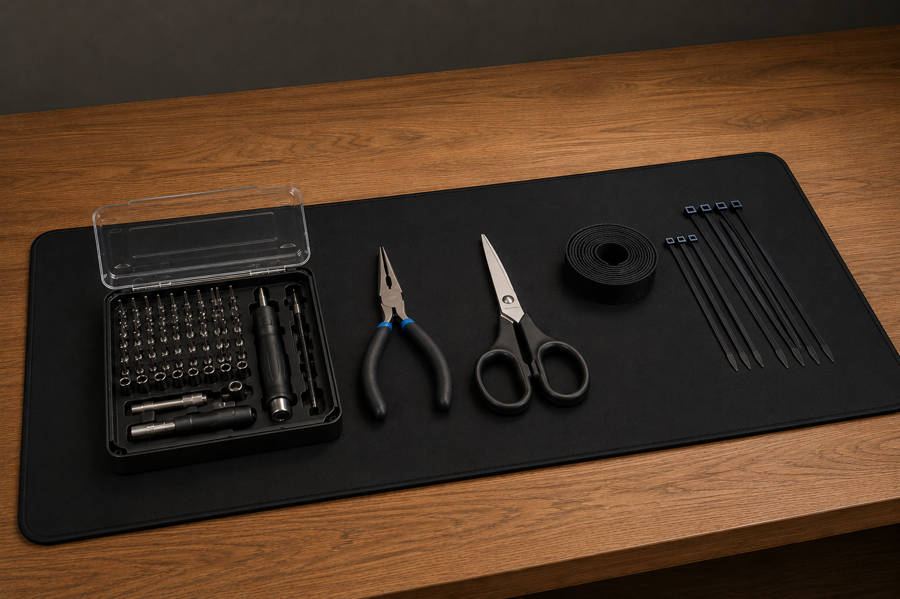
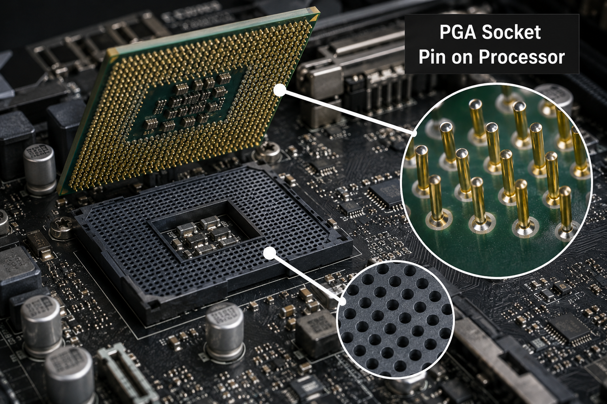
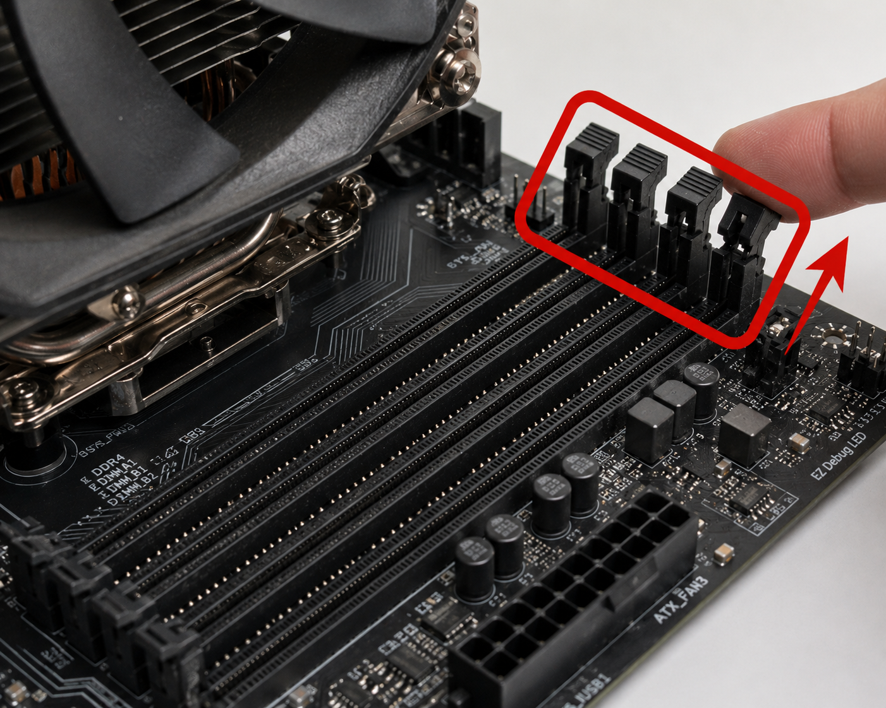
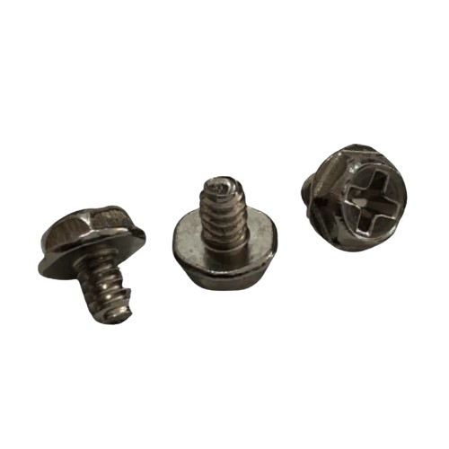

BUILDING YOUR PC:
Now that all of your components have been selected, it is finally time to build your PC. This is often the most exciting part of the process, as all of the planning and research now come together into a complete system.Building a PC may seem difficult or intimidating at first, especially for beginners, but by following the correct steps carefully and taking your time, the process is much easier than many people expect.
This page will guide you through the general PC building process step-by-step, including component installation, cable connections, and important things to check before powering the system on for the first time.
Most Motherboard manuals will also provide installation and building instructions.


STEP 1: GATHERING TOOLS & PRE-BUILD PREP
When building a PC, it is important to have the proper tools.1. A Screwdriver Kit
You may be able to get by with a screwdriver you already have, but a proper screwdriver kit with a variety of bit sizes is highly recommended for PC building.
2. A Pair of Pliers
Pliers can be useful for removing tight motherboard standoffs, holding small parts, or helping with difficult screws in tight spaces.
3. A Pair of Scissors
Useful for cutting zip ties, opening packaging, and managing cables during cable management.
4. Zip Ties or Velcro Straps
These are useful for cable management and keeping the inside of the PC organized.
5. A Clean Workspace
Build the PC on a clean, flat, non-conductive surface with good lighting and enough room to organize components and screws. Avoid building on carpet if possible to reduce static electricity.
STEP 2: CPU INSTALLATION
When handling the motherboard, it is recommended to hold it by its edges or heatsinks (the smooth metal pieces located around the board) to avoid touching delicate components or damaging pins.Remove the motherboard from its box and remove all protective plastic and packaging materials (except for the protective cover on the CPU socket/bracket, which will come off during CPU installation). Leave the remaining accessories inside the box for now, as they may be needed later.
Place the motherboard on top of its box or another clean, non-conductive surface before beginning installation.
There are 2 types of CPU sockets:
1. PGA (Pin Grid Array): Pins are directly on the CPU and contacts are on the Motherboard.
To install:
1. Open the retention arm by pulling it up.
2. Find the alignment marker on the CPU (usually a small triangle in one corner).
3. Match this marker with the corresponding marker on the motherboard socket
4. Gently lower the CPU straight into the socket without applying force. If needed, give very gentle wiggles to make sure it is in the socket properly.
5. Once fully seated, lower and secure the retention arm. It may require some force, but if it doesn't lower, the CPU may not be placed properly.
The CPU should drop into place naturally when aligned correctly.Never force the processor into the socket.
If CPU pins become bent, they can sometimes be carefully straightened using a small tool such as a mechanical pencil, credit card edge, or tweezers. This must be done very gently, as the pins are extremely fragile and can break easily if too much force is applied.
2. LGA (Land Grid Array): Pins are directly on the Motherboard and contacts are on the CPU.
To install:
1. Open the retention arm by pulling it up. Then, lift the retention frame.
2. Find the alignment marker on the CPU (usually a small triangle in one corner).
3. Match this marker with the corresponding marker on the motherboard socket
4. Carefully place the CPU flat into the socket without sliding it around. Give it gentle wiggles if needed to ensure it is seated properly.
5. Once fully seated, lower and secure the retention frame and arm. It may require some force, but if it doesn't lower, the CPU may not be placed properly. The cover on the retention frame should pop off.
Never touch or apply pressure to the motherboard socket pins, as they are extremely delicate and difficult to repair if damaged.Whether using LGA or PGA, be extremely careful around the pins on both the motherboard and CPU. Bent pins can prevent the system from functioning properly and may be difficult to repair.
If pins become bent, they can sometimes be carefully straightened using a very small tool such as a sewing needle, tweezers, or a mechanical pencil. This should be done gently and slowly to avoid further damage.

 These are the alignment markers of a CPU. They ensure the CPU can only be installed correctly.
These are the alignment markers of a CPU. They ensure the CPU can only be installed correctly.



Opening the retention clips

Line-up Points

Push down on the ends with your thumbs
STEP 3: RAM INSTALLATION
The RAM is installed into the Motherboard's DIMM (Dual Inline Memory Modules) slots which are usually located right next to the CPU socket (on the right). The installation for both types (DDR4 and DDR5) is the same.1. Check your Motherboard manual for the optimal installation arrangement for the given number of RAM sticks that you have; don't just pick any slots at random. Installing RAM in the correct slots allows the system to run in dual-channel mode, which improves memory performance.
2. Once you know which slots you are using, open the clips on the ends of the slots needed (some motherboards will have on only one side some will have on both) by pulling them back.
3. Locate the notch in the gold contacts on the bottom of the RAM stick. This notch is off-center and matches a divider inside the motherboard RAM slot. Because of this, the RAM can only be installed in one direction and cannot be inserted backwards. Hold the RAM stick by the edges and align it carefully above the slot. Make sure the notch on the RAM lines up perfectly with the divider in the slot and that both ends of the RAM are evenly positioned inside the guides of the slot near the retention clips.
4. Once aligned correctly, press firmly straight down on both ends of the RAM stick at the same time. The RAM should slide fully into the slot and the retention clips should automatically click and lock into place.
5. Check that:
- The RAM is sitting flat and evenly in the slot
- The retention clips are fully locked onto the RAM sticks
- Very little of the gold contacts are visible
- If needed, give the stick a slight pull to ensure it doesn't come loose and is in properly
RAM often requires more force than many beginners expect, so it is normal to press firmly. However, if the RAM does not seem to fit properly, stop and double-check the alignment instead of forcing it.
STEP 4: M.2 SSD INSTALLATION
Traditional hard drives are still used today, but M.2 solid-state drives (SSDs) have become the standard choice for modern operating systems and main storage drives because of their much faster speeds. An M.2 SSD is a small, thin storage device that installs directly into an M.2 slot on the motherboard without requiring separate SATA data or power cables.Most motherboards include multiple M.2 slots. For the best performance, it is generally recommended to install your primary boot drive in the M.2 slot that connects directly to the CPU, which is often the slot closest to the CPU socket. Check your motherboard manual to identify the recommended slot configuration for your system.
Before installation:
- Locate the correct slot(s) that you will use
- Remove the heatsink if your Motherboard has one
- Locate the M.2 mounting screw or quick-release mechanism (opposite end from where the pins of the drive meet the contacts) and remove the screw or open the mechanism
1. Locate the notch in the connector of the M.2 SSD and match it with the divider inside the Motherboard's M.2 slot. The SSD can only be installed in one direction and cannot be inserted backwards. It looks similar to the notch in the center of the RAM stick, because the connection is very similar to that of the RAM, just with a lot less force necessary.
2. Hold the SSD by the edges and insert it into the slot at roughly a 20-30 degree angle until it is fully seated. The gold contacts should mostly disappear into the slot. It is normal and safe for the SSD to spring upward slightly after being inserted at an angle, as this is part of the mounting design.
3. Once fully inserted, gently push the raised end of the SSD downward toward the motherboard until it lines up with the mounting hole or latch mechanism.
4. Secure the SSD using the Motherboard's M.2 screw or quick-release latch.
5. If your motherboard includes an M.2 heatsink, remove the plastic protective film covering the thermal pad underneath the heatsink. The thermal pad is a soft, heat-conductive material that helps transfer heat away from the SSD into the heatsink to keep it cool. Once the plastic film is removed, place the heatsink back over the SSD and secure it properly.
The SSD should sit flat against the motherboard once installed correctly. Never force the drive into the slot. If it does not insert smoothly, double-check the alignment and orientation before applying pressure.

This is the heatsink of the correct M.2 slot to use.

This is the screw / latch system.

Insert into the slot like this

Insert into the slot like this
 Insert the Motherboard at an angle and align the screw holes with the standoffs and the ports on the side with the I/O shield holes.
Insert the Motherboard at an angle and align the screw holes with the standoffs and the ports on the side with the I/O shield holes.

STEP 5: MOUNTING THE MOTHERBOARD IN THE CASE
The motherboard is installed inside the PC case and secured using screws and standoffs. Standoffs are small metal spacers that raise the motherboard slightly off the case to prevent it from touching the metal and short-circuiting.Before installation:
- Make sure the correct standoffs are installed in the case based on your Motherboard's size (ATX, Micro-ATX, etc.)
- Standoffs can usually be moved around depending on your motherboard size. Extra standoffs can also be added or removed using the screws/accessories that come with the case.
- Ensure that any extra standoffs that do not match the motherboard layout are removed
- The standoff pattern should match the motherboard's screw hole pattern as closely as possible to ensure proper support and safe installation
- Check that the rear I/O shield is installed (if your motherboard does not have a built-in one)
- To install the I/O shield, align it with the rectangular opening at the back of the case and press it firmly into place until it clicks/snaps into position
- Ensure the Case is placed on a stable surface with enough space to work. Be mindful of the Case scratching the surface or the surface scratching the Case
- Open the case by removing the panels based on its instruction manual
1. Carefully lower the motherboard into the case, aligning the rear I/O ports with the I/O shield opening at the back of the case.
2. Make sure the motherboard screw holes line up with the installed standoffs inside the case.
3. Once aligned, gently press the motherboard into place so it sits flat on all standoffs. Do not force it.
4. Secure the motherboard using screws provided with the case or motherboard kit. Tighten them until snug, but do not overtighten as this can damage the board.
Important Notes
- Standoffs are essential; never install the Motherboard directly onto the case without them
- Ensure the standoff layout matches the Motherboard's mounting holes before installing
- Remove any unused or incorrectly placed standoffs to avoid short circuits or misalignment
- Make sure the Motherboard sits evenly and doesn't bend when screwed in
- Pliers may be needed when installing or removing standoffs, as they can be tight and difficult to adjust by hand
Final Check
Once installed, the Motherboard should:
- Be firmly secured to all required standoffs
- Sit flat without bending
- Have all rear ports properly aligned with the case opening
STEP 6: FRONT PANEL CONNECTOR INSTALLATION
Front panel connectors link the case's buttons and front ports to the motherboard. These include the power button, reset button, power LEDs, front USB ports, and front audio jacks. This step can be tricky because the connectors are small and must be placed on the correct pins.Before starting:
- Locate the front panel header pins on the motherboard (usually labeled F_PANEL, JFP1, or similar in the motherboard manual)
- Check your motherboard manual for the exact pin layout, as it varies between models
1. Locate the front panel connector cables coming from the case. They are usually bunched up together and are labeled. They include:
- Power Switch (PWR_SW)
- Reset Switch (RESET_SW)
- Power LED (PLED +/-)
- HDD LED (HDD_LED +/-)
2. Match each connector to the correct pins on the motherboard using the motherboard manual as a guide. Correct polarity matters for LED connectors (positive and negative), but switch connectors (power/reset) can be installed either way.
3. Carefully push each connector onto the correct pins. They should slide on snugly without requiring excessive force.
Blocked Pins (Important)
Some front panel headers include blocked or missing pins on purpose. These are designed to prevent incorrect installation and ensure connectors are oriented correctly. Do not force connectors onto blocked pins, as they will not fit and forcing them can damage the header.
4. Locate the additional front panel connectors from the case. These may include:
- USB 2.0 header (smaller 9-pin connector)
- USB 3.0 / USB 3.2 Gen 1 header (large 19-pin connector, often blue)
- USB-C (USB 3.2 Gen 2 Type-C) front panel connector (rectangular, used on newer cases and supported motherboards)
- Front audio connector (usually labeled HD_AUDIO)
5. Connect each plug to its matching motherboard header. These connectors are keyed and can only be inserted one way due to their shape and blocked pin layout.
6. Press them in firmly until fully seated correctly.
Important Notes
- Always refer to the motherboard manual; front panel pin layouts are not universal. The manual will help you find and match all the right headers with the right pins.
- Do not force connectors onto pins; they should fit smoothly when aligned correctly
- Blocked or missing pins are intentional and act as alignment guides
- Make sure you connect the correct USB type to the correct header to avoid damage or non-functioning ports
- Take your time, as incorrect wiring will prevent buttons or ports from working properly
Final Check
Once complete: (only test when the PC is finished)
- Power button should turn the system on
- Reset button should function (if used)
- Front USB ports (USB 2.0 / USB 3.0 / USB-C) should be detected by the system
- Front audio jack should work for headphones and microphone

The Motherboard page with the header placements looks something like this


Commonly Used Thermal Paste Patterns


Sample AIO Installation

Sample Air Cooler Installation (AIO waterblock is similarly installed)
STEP 7: CPU COOLER INSTALLATION
(AIO & AIR COOLERS. FOR CUSTOM LOOPS, FOLLOW BUILDING INSTRUCTIONS BASED ON YOUR SPECIFIC COMPONENTS)
Now is the time to install your CPU Cooler. Air Coolers can be installed either before the Motherboard is placed into the Case or after, while AIO liquid coolers are generally easier to install once the Motherboard is already mounted in the Case.
Although most Motherboards come with the CPU Cooler mounting backplate pre-installed, some may require you to install it manually. If your Motherboard does not already have it installed, make sure to attach the correct backplate before the Motherboard is mounted in the Case.
Also ensure to properly remove all packaging and plastic. This is a very common mistake, especially around the contact area between the cooler and the CPU. Leaving that plastic sticker on will cause serious issues and completely defeats the purpose of having a CPU Cooler.
Note: Always ensure that you install any CPU Cooler Fans while taking into consideration the airflow direction like for case fans.
THERMAL PASTE APPLICATION
- Apply a small, pea-sized amount of thermal paste in the center of the CPU.
- When the cooler is installed and pressed down, the pressure will naturally spread the paste evenly across the CPU surface. But, you can also spread the paste manually with something like a card or spatula if you feel more comfortable doing so. Just ensure to cover the entire surface area of the CPU and to spread an even layer that isn't too thick or too thin.
- Work quickly with it, as it will start to dry. Try to get the cooler installed on it as quickly as possible after application.
INSTALLING AN AIR COOLER
1. Install all the correct mounting hardware (refer to instruction manual of the cooler).
2. Place the cooler onto the CPU, aligning it with the mounting system.
3. Secure the cooler as required to the mounting system.
4. Attach the fan to the heatsink if not already pre-installed
5. Connect all cables coming from the cooler to the corresponding headers on the motherboard. If the cables aren't labeled, refer to the cooler's manual.
INSTALLING AN AIO (ALL IN ONE) LIQUID COOLER
1. Install the radiator fans onto the radiator (refer to cooler manual)
2. Install the radiator into the case (commonly top or front mounting depending on airflow and case support) (use the cooler's instruction manual).
3. Install all the correct mounting hardware (refer to cooler's instruction manual).
4. Secure the pump to the CPU / Mounting Hardware (refer to cooler's instruction manual).
5. Connect all cables coming from the pump, radiator and fans to the corresponding headers on the motherboard. If the cables aren't labeled, refer to the cooler's manual.
Important Notes
- Mounting systems vary between cooler models, especially across different brands and CPU sockets
- Always refer to the installation manual for your specific cooler and exact bracket setup and orientation
- The general installation process remains the same:
mount bracket → apply thermal paste → secure cooler → connect power
- Do not overtighten screws, as this can damage the CPU or motherboard
Final Check
- Cooler is firmly mounted with no movement
- All connections are done properly
- No cables are interfering with fans or airflow
STEP 8: POWER SUPPLY AND CABLE INSTALLATION
BEFORE INSTALLATION
- Locate the PSU mounting area in the case (usually at the bottom rear)
- Determine the correct fan orientation for the PSU
- Identify and prepare the cables required for your specific components before installing the PSU
Common required cables include:
- 24-pin Motherboard Power
- CPU EPS Power (4-pin / 8-pin / 4+4-pin)
- PCIe GPU Power (6-pin / 8-pin / 6+2-pin / 12VHPWR depending on GPU)
- SATA Power
PSU FAN ORIENTATION
The PSU fan must have access to airflow.
- If the case includes a bottom ventilation opening with a dust filter, the PSU fan should usually face downward
- If the case uses a side-mounted PSU layout, position the fan toward the ventilated side panel or airflow opening
- If none of these options are available, the fan should face upward into the case
Never block the PSU fan intake.INSTALLING THE PSU
1. Slide the PSU into the mounting area of the case.
2. Align the screw holes on the PSU with the mounting holes on the case.
3. Secure the PSU using the included PSU screws.
4. If using a Modular or Semi-Modular PSU, connect only the cables needed for the build.
INSTALLING THE PSU - ROUTING AND CONNECTING CABLES5. Route cables through the back of the case whenever possible for cleaner cable management and improved airflow.
6. Connect the 24-pin motherboard power cable into the motherboard.
7. Connect the CPU power cable (usually near the top-left of the motherboard).
8. Connect GPU power cables (or prepare and position them for connection if the GPU is not installed yet).
9. Connect SATA power cables to SATA SSDs, HDDs, fan/RGB hubs, or other powered accessories if needed.
10. Connect any additional required cables for:
- AIO Pumps or CPU Coolers
- RGB/Fan Controllers
- Accessories or hubs
CABLE MANAGEMENT
Cable management is the process of organizing the cables that must stay in the PC, whether the cables you are using or the extras from a non-modular PSU.
Although this step is more of a personal choice, if you care that the invisible inside part of your PC looks tidy or not, you will likely need to do some level of cable management to ensure all of your case's side panels can close and fit back on properly.
- Bundle excess cables together using zip ties or velcro straps (often included)
- Keep cables away from fans and airflow paths
- Ensure cables are not excessively bent, stretched, or under tension
IMPORTANT NOTES
- Never mix modular PSU cables between different power supplies unless specifically confirmed compatible by the manufacturer
- Ensure all power connectors are fully seated
- Some motherboard and GPU power connectors may require firm pressure to fully connect. But, if it required a significant amount, check the connection and the direction it is being inserted.
- Poor cable management can restrict airflow and increase temperatures
FINAL CHECKS
- PSU is securely mounted
- PSU fan orientation is correct
- 24-pin motherboard power cable is connected
- CPU power cable is connected
- GPU power cables are connected (if required)
- SATA power cables are connected properly
- No cables are touching fans
- Cable management is secure and organized

ATTACH ALL NECESSARY CABLES

INSERT PSU INTO MOUNTING LOCATIO & SCREW IT IN THE BACK OF THE PC CASE

PSU SCREWS USUALLY LOOK LIKE THIS. THEY ARE IDENTICAL TO THE GPU SCREWS.

MOUNT THE DRIVE & CONNECT CABLES
STEP 9: SATA (SSD/HDD) DRIVE INSTALLATION
SATA SSDs and HDDs are additional storage drives commonly used for games, files, applications, and extra storage capacity. Unlike M.2 drives, SATA drives require both a SATA data cable and a SATA power cable to function.THERE ARE 2 MAIN TYPES OF STORAGE DRIVES:
- SATA SSDs 2.5" (most common size)
- SATA HDDs 3.5" (most common size)
Before Installation:
- Locate the drive mounting location inside the case, they are usually in the back where the power supply goes
- Locate SATA data cables (usually included with the Motherboard)
- Locate SATA power connectors coming from the power supply
- Identify available SATA ports on the motherboard
Installing SATA SSD:
- Locate the drive mounting location inside the case, they are usually in the back where the power supply goes. (2.5" for the SSD)
- Position the SSD into the mounting bracket, tray, or dedicated SSD mount (refer to instruction manuals for the specific installation process of your components). Secure it using screws or the specific installation system/method for your specific components.
- Connect the cables:
- SATA data cable (smaller one) (into the SSD then into the Motherboard)
- SATA power cable (larger one) (into the SSD then into the Power Supply)
Installing SATA HDD:
- Locate the drive mounting location inside the case, they are usually in the back where the power supply goes. (3.5" for the HDD)
- Position the HDD into the mounting bracket, tray, or dedicated mount (refer to instruction manuals for the specific installation process of your components). Secure it using screws or the specific installation system/method for your specific components.
- Connect the cables:
- SATA data cable (smaller one) (into the HDD then into the Motherboard)
- SATA power cable (larger one) (into the HDD then into the Power Supply)
SATA CABLE CONNECTIONS:
- SATA data cables transfer storage data between the motherboard and the drive
- SATA power cables provide power from the PSU to the drive
- Both connections are required for SATA drives to function properly
SATA connectors are keyed and can only be inserted one way. Never force cables into connectors.Important Notes
- Some motherboard SATA ports may become disabled when certain M.2 slots are used; check the motherboard manual if drives are not detected
- HDDs may produce vibration and noise during operation, which is normal. They have physical spinning disks inside which read storage info
- Route SATA cables neatly to improve airflow and cable management
- Ensure cables are fully connected on both ends
Final Check
- Drive is securely mounted
- SATA data cable is connected properly
- SATA power cable is connected properly
- Drive is detected in BIOS after powering on
STEP 10: CASE FAN & RGB INSTALLATION
Recap (this section should have already been assessed during component selection):Case fans help improve airflow throughout the PC and keep components such as the CPU, GPU, motherboard, and storage devices cool. Proper airflow is important for maintaining safe temperatures and stable performance.
Most cases will already include some pre-installed fans, but additional fans can often be added for improved cooling and aesthetics.
Before Installation:
- Check your case for supported fan sizes (commonly 120mm or 140mm)
- Determine where fans will be installed (front, top, rear or bottom of the case)
- Plan airflow direction before mounting the fans
Airflow Direction
Case Fans move air in one direction:
- Intake fans bring cool air into the case
- Exhaust fans push hot air out of the case
In most cases:
- Front and Bottom fans are used as intake
- Rear and top fans are used as exhaust
- Note: Not all of these fan places in the case need to be filled. Usually just a set of intake fans on the front and on the back work just fine for solid airflow.
2 types of fans exist:
- Regular Blade
- Reverse Blade
More recap information about case fans on the COMPONENTS PAGE under the PC Case section.
INSTALLING THE FANS
1. Position the fan in the desired mounting location inside the case.
2. Ensure the airflow direction of the fan is correct before securing it.
3. Align the screw holes on the fan with the mounting holes on the case.
4. Secure the fan using the included fan screws.
5. Connect the fan cable to the appropriate motherboard header (or if using a fan hub or controller connect it to that, then connect that to):
- SYS_FAN
- CHA_FAN
- CASE_FAN
ARGB & RGB CONNECTIONS
Some fans include RGB or ARGB lighting cables.
- RGB (12V, 4-pin) and ARGB (5V, 3-pin) are NOT the same
- Never force one type into the wrong header, as this can damage the pins or the LEDs
- Locate the correct type of header for the type of lighting of the fan
- If using a hub or controller, follow the specific instructions to set it up
Important Notes
- Make sure cables do not interfere with fan blades
- Don't overtighten fan screws
- Balanced airflow helps improve cooling and reduce dust buildup
- Always check airflow orientation before fully mounting the fans
Final Check
- All fans spin freely
- Airflow direction is correct
- No cables are interfering with fans or airflow
- Fan cables are connected properly
- No cables are touching fan blades

SAMPLE FAN INSTALLATION - SCREW IN THE 4 CORNERS

ARGB & RGB CONNECTION OPTIONS

RGB 12V 4-PIN vs. ARGB 5V 3-PIN

AIRFLOW DIRECTION

REMOVE THE EXPANSION BRACKETS AS NEEDED. SCREW IN THE GPU HERE AT THE END.

INSERT GPU INTO PCIe LANE AND LINE UP WITH EXPANSION SLOTS ON CASE

GPU SAG EXPLAINED WITH SOLUTIONS DEMONSTRATED
GPU SCREWS USUALLY LOOK LIKE THIS. THEY ARE IDENTICAL TO THE PSU SCREWS.
STEP 11: GPU INSTALLATION
The Graphics Card (GPU) is installed into the motherboard's PCIe (Peripheral Component Interconnect Express) slot and is responsible for rendering graphics, video output, gaming performance, and other graphics-intensive tasks.Most modern GPUs are large and heavy, so proper installation and support are important.
Installing the GPU is also somewhat similar to installing RAM.
Before Installation
- Find the main PCIe x16 slot on the motherboard. It is usually the top reinforced slot closest to the CPU, but always check the motherboard manual to confirm the recommended slot.
- Check how many rear PCIe expansion slots the GPU occupies
- Remove the required PCIe slot covers from the back of the case by unscrewing them or snapping them out depending on the case design.
- Ensure that all packaging and protective materials are removed from the card
- It is recommended to route and prepare GPU power cables before installing the graphics card, as the GPU may block access to some cable routing areas after installation. Find the needed cables for the card from the power supply and route them for easy access to connect them later. Observe the connection ports on the front of the card to determine what you need.
INSTALLING THE GPU
1. Locate the correct PCIe x16 slot on the motherboard (refer to manual)
2. Push down the retention clip at the end of the PCIe slot before installation
3. Align the GPU with:
- The PCIe slot on the motherboard
- The rear PCIe expansion openings on the case
4. Ensure the display outputs on the GPU line up properly with the openings at the back of the case so display cables can be connected once installed
5. Carefully press the GPU straight down into the PCIe slot until it fully clicks into place and the retention clip locks
6. Secure the GPU to the case using the appropriate screws at the rear expansion slots
INSTALLING THE GPU - POWER CONNECTIONS7. Connect any required GPU power cables from the power supply. Depending on the graphics card, these may include:
- 6-pin PCIe
- 6+2-pin PCIe (Yes, different than 8-pin! This type can be used as an 8-pin total or 6-pin)
- 8-pin PCIe
- 12VHPWR (12 volt high power) / 16-pin connector (common on newer, high-end, especially Nvidia GPUs) (some GPUs will include splitters to use with normal PCIe power supply connectors, but some power supplies directly include this type)
8. Ensure all power connectors are fully seated and securely connected. If needed, give the cables a very slight tug to verify they are locked in properly
GPU SAG (IMPORTANT)
Some larger GPUs may sag or bend slightly due to their weight. All GPUs carry this risk, however it is significantly more obvious with larger cards. Excessive sag can place stress on the motherboard and damage the slot or the GPU over time.
To prevent this, GPU anti-sag brackets exist (sometimes included with GPUs) and are definitely recommended. They aren't too expensive either, so why not?
They come in all sorts of different shapes and sizes, so follow the installation instructions for the one that you have.
IMPORTANT NOTES
- Never force the GPU into the PCIe slot
- Ensure the rear bracket lines up properly with the case before applying pressure
- Make sure all required power cables are connected before powering on
- Connect your monitor to the GPU ports, NOT the motherboard ports (unless using integrated CPU graphics)
- After installation, ensure the GPU feels secure and does not move excessively when lightly checked
FINAL CHECKS
- GPU is fully seated in the PCIe slot
- Retention clip is locked
- GPU screws are secured
- All required GPU power cables are connected
- Display outputs are accessible through the back of the case
- GPU anti-sag bracket is correctly installed (if using)
- Monitor is connected to the GPU (when ready for power-on)
OTHER PARTS AND ENDING
Before your PC is officially finished, there are a few more things.1. Install any additional accessories or components that were not specifically covered in this guide, such as internal WiFi/Bluetooth adapters, RGB accessories, capture cards, or additional expansion cards.
2. Do not re-install the side panels yet. If something does not work correctly during the first power-on, internal troubleshooting or adjustments may be required. Only reinstall the panels once the system is confirmed fully functional.
3. Congratulations! You have just built your very own custom PC!